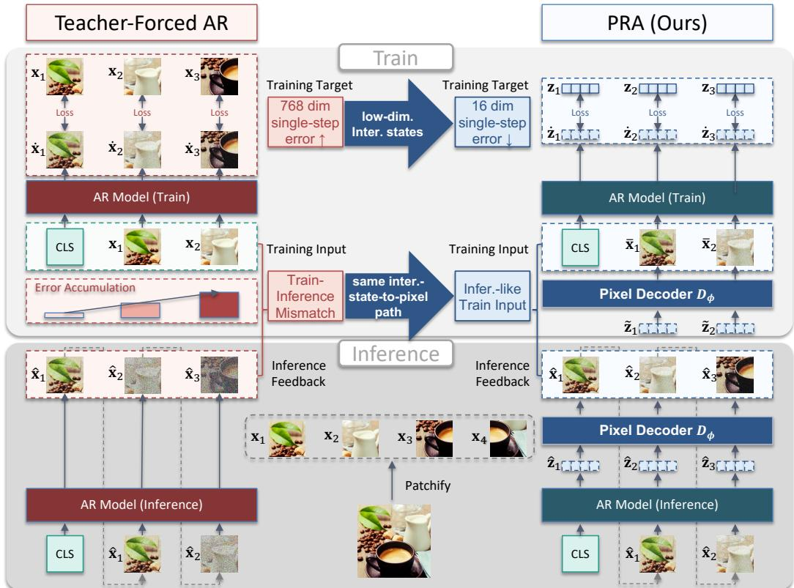

先说结论。对自监督方向的价值在于它绕开离散 tokenizer，同时让生成模型内部状态具备可测的视觉语义表征。 它为“无预训练 tokenizer 的图像 AR 模型”提供可扩展训练近似，连接统一图像生成与理解。
Figureure 1 · : Left: FID comparison of pixel-space AR models across parameter scaleFigure 1: Left: FID comparison of pixel-space AR models across parameter scales. PRA achieves substantially lower FID than prior baselines, with PRA-S (135M) already outperforming billionparameter models. Right: Uncurated 256×256 samples generated by PRA-L.这张图/表用于判断 Parallel Rollout Approximation for Pixel-Space 的实验收益来自哪里。重点看替换、消融或跨模型设置下趋势是否一致，而不是只看单个最高分。

Figureure 2 · : PRA addresses both output-side and input-side challenges in pixel-spFigure 2: PRA addresses both output-side and input-side challenges in pixel-space AR generation. Output-side: Instead of directly predicting high-dimensional pixel patches, PRA generates low-dimensional intermediate states and decodes them back to pixel tokens, reducing single-step generation errors. Input-side: Instead of training only on clean ground-truth prefixes, PRA constructs decoded, inference-like pixel inputs in parallel through the same pixel decoder used at inference, reducing train–inference mismatch. This yields a rollout-like pixel-space generated prefix without sequential rollout, while preserving a pixel-in, pixel-out AR interface.这张图来自论文 PDF 的结构化抽取。当前用于辅助理解 Parallel Rollout Approximation for Pixel-Space 的方法或实验，请结合正文精读段落一起看。